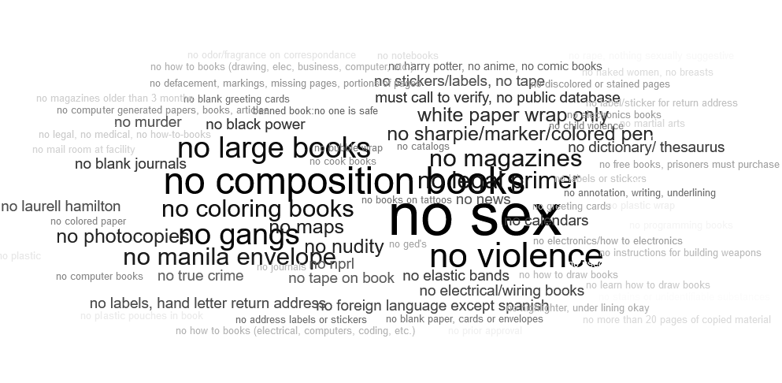

Khoa Anh Vo, Mirza Nayeem Ahmed, Julian Benitez Mages
Service-Learning Course Project as part of Ds 4200 S22 Information Presentation & Visualization, taught by Prof. Cody Dunne, Data Visualization @ Khoury, Northeastern University.
DEMO VIDEO
The Prison Book Program is a non-profit organization that sends books to
prisoners to facilitate their political, spiritual, and educational development.
They send over 10,000 packages to different prisons each year.
The organization is currently seeking to make its book collection and distribution process more efficient.
They are also interested to learn more about the flow of donations into the organization.
At first, we will analyze the restrictions dataset. This dataset contained the name and location of different prisons, along with the restrictions that those have set in terms of what books they allow. These restrictions could be separated into two parts, common restrictions regarding the condition of the book, and additional restrictions which mainly looked at the content within the book.
Word Cloud
 We parsed through the manually typed notes to identify the main keywords and generated this word cloud. Phrases that were more frequent are larger in size and have a greater color intensity.
This visualization can help the user explore the additional restrictions and provide a better idea of what types of books they could avoid during the collection stage.
To get a more granular view of what the most common restrictions look like across different cities and to support the task of sorting the prisoner' books based on their prison, we have created this map. Each circle on the map represents a prison. When you click the circle, you will find the name of the prison and boolean values to indicate whether each of the common restrictions exists in the prison or not. The color of the circle gives the users an idea of how restrictive that prison is with red being that the prison doesn't accept books, orange being that their is a limit on the number of books that the prison accept, and blue being that there isn't any restriction on the number of books the prison accept.
Prevalance of the Most Common Restrictions
It is important to be aware of the frequency of the most common restrictions. This stacked barplot lists out the seven most common restrictions and shows their prevalence in terms of percentage. During the book sorting stage, the organizers can make sure that they are able to include more books that meet most of the requirements.
The Prison Book Program is reliant on its fundraising efforts to sustain its activities.
Thus, it is also important for them to keep track of the sources of donations and how the flow of funds varies with time.
The line charts above show the trend of donations across time. The George Floyd group fund has been a point of interest for the organizing committee, which is why it is kept separate from the general fund as we used two separate lines to show this pattern. The third line shows the overall donation count/ amount over time. On the left, we have the count of donations at each instance of time. On the right, we have the total amount received during that time period. A particular time frame can be brushed/ selected to zoom in on the values within that time. By double clicking on the visualization, it will automatically zoom out and return to its initial state.
Top 15 Donors
This simple bar chart allow user to hover over the bar to see the exact number of times a donors has donated, thus helping the organization keep track of the top donors and the number of times they have donated and maintain good relationships with them to ensure a consistent flow of funds.
List here where any code, packages/libraries, text, images, designs, etc. that you leverage come from.